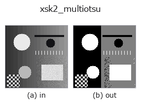

segmentation op• Data kinds: image → image
• Call: fullseye.apply(img, "xsk2_multiotsu", a=0.5, b=0.5) (2-D model = एक image + दो scalar knobs a,b∈[0,1])

*Figure synthetic 128×128 input पर सच में चलाकर मिला output है। बाईं ओर input, दाईं ओर output। Point clouds ऊपर से देखे गए scatter के रूप में (brightness = z), 1-D series line के रूप में, volumes z दिशा में maximum-intensity projection के रूप में, videos बीच के frame के रूप में, complex images amplitude के रूप में, और जो return values चित्र नहीं बन सकते वे स्वयं values के रूप में दिखाए जाते हैं।*
Knob a को बदलकर (0.1 / 0.5 / 0.9, दूसरा knob default पर):
▸ xsk2_multiotsu: knob a को बदलने का figure (docs site)
*Knob b output नहीं बदलता (मापा गया: 0.1 / 0.5 / 0.9 पर एक जैसा)।*
दूसरी images पर भी (synthetic scene / photo / coins। ऊपर की row में inputs, नीचे की row में उनके outputs। Knobs default पर):
▸ xsk2_multiotsu: दूसरी images पर output (docs site)
*चौथा column colour (H,W,3) input है। यह op channels को पार किए बिना colour संभालता है (colour channel को तीसरे spatial axis की तरह convolve नहीं करता)।*
Otsu की discriminant analysis method (Otsu's method) को multi-level तक बढ़ाने वाली multi-Otsu विधि से tones को quantise करता है। skimage.filters.threshold_multiotsu इस्तेमाल करता है।
a वर्गों की संख्या को 3 और 4 के बीच बदलता है (3 + int(a > 0.5))। 5 या ज़्यादा वर्ग implement नहीं किए गए हैं——multi-level Otsu की exhaustive threshold search की लागत bins ** (classes - 1) के अनुसार बढ़ती है; मापा गया (128x128), 3 वर्गों में 0.0008 s लगते हैं जबकि 5 वर्गों में 2.435 s (3239 गुना), इतना धीमा कि evolution loop की केवल 1 पीढ़ी में execution रुका हुआ लगता है (image size से लगभग स्वतंत्र)। 4 वर्गों के साथ यह 0.025 s के भीतर रहता है। b उपयोग नहीं होता। Thresholds से quantise करने के बाद, परिणाम को (cls-1) से भाग देकर [0,1] पर normalise किया जाता है।
Values की तुलना (मापा गया): output को उसी image के अधिकतम से normalise किया गया है (output का अधिकतम हमेशा 1.0 होता है, और input को किसी constant से गुणा करने पर भी output नहीं बदलता)। इसलिए अलग-अलग images के values की तुलना नहीं की जा सकती — समान ताकत वाले feature का value भी इस पर निर्भर करता है कि उस image में सबसे मज़बूत feature कौन-सा है। केवल कमज़ोर features वाली image में noise 1.0 तक उठ जाता है। images के बीच तुलना करनी हो तो किसी साझा reference से फिर से भाग दें।
• gallery2d_segmentation family guide
• Sample data catalog (DL URL / license) — 2-D के लिए skimage.data (BSD/public) + synthetic, 3-D के लिए real data sources (Stanford/PDS आदि) के DL URL।
• Operators का स्रोत और संदर्भ — इस op family के मूल research/methods के स्रोत।
• Algorithm का मानक स्रोत (लेखक, वर्ष) और उपयोग ऊपर की family usage guide में दिए गए हैं।
नीचे का program सच में चलता है, यह जाँचा गया है (figure वाला ही input)। Studio की help में यह block buttons बन जाता है, जिनसे इसे वहीं load करके चलाया जा सकता है।
xsk2_multiotsu 0.50 0.50
▸ यह pipeline load करें · Load करके चलाएँ
• gallery2d_segmentation — py -3.11 examples/gallery2d_segmentation.py
• poc_mri_bias_field — py -3.11 examples/poc_mri_bias_field.py
image को input के रूप में लेते हैं)identity · gaussian · mean_box · bilateral · unsharp · median · min_filter · max_filter
segmentation)threshold · otsu · canny · adaptive_gauss_thresh · sk_otsu · sk_li · sk_yen · sk_sauvola
*Provenance: ops.py — 2D operator registry. यह per-op note tools/opdocs.py md से अपने-आप generate होता है (हाथ से edit न करें)।*
© 2026 Kazufumi Furuse — Fullseye operator documentation. Licensed under Apache-2.0.